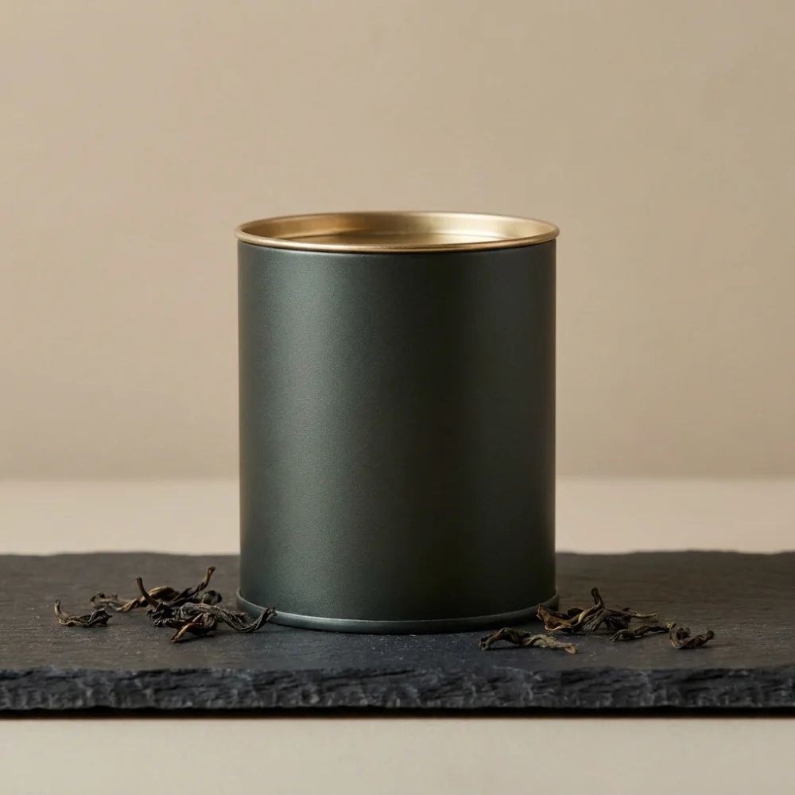
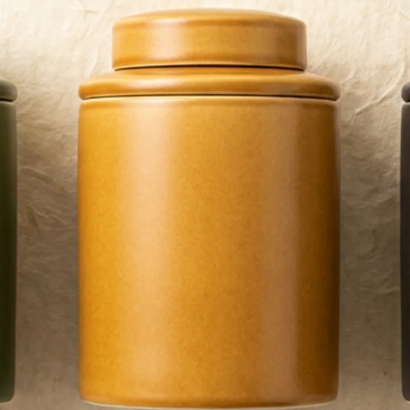

茶品選購 · Shop
挑一座山的味道
全系列單一產區高山茶,皆為當季鮮葉、職人焙製、充氮封罐。點選分類,找到屬於你的那一款。
招牌
梨山 · 2,000m
梨山高山烏龍
花蜜香清揚,冷甜喉韻綿長,高山茶的經典代表。
NT$880

阿里山 · 1,600m
阿里山金萱
獨特奶香與清雅花香,口感滑順,初入門也喜歡。
NT$680

杉林溪 · 1,700m
杉林溪烏龍
山頭氣明顯,湯色蜜綠,甘潤滑口、層次飽滿。
NT$760

坪林 · 文山
文山包種
輕發酵清香型,花香高揚、滋味清爽,日常最耐喝。
NT$540
熱銷
花蓮 · 瑞穗
蜜香紅茶
小綠葉蟬著涎天然蜜香,熱飲溫潤、冷泡清甜。
NT$620
禮盒
職人選 · GiftNT$2,040NT$1,680
霧森禮盒・三入組
高山烏龍、蜜香紅茶、文山包種一次珍藏,附手寫卡。